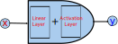

3. Neural Networks Foundations
//TODO 젤아래로 옮기기
Link
Overview.

NN 은 선형 변환들과 + 비 선형 함수들의 조합 이다. - NN의 장점과 유연함은 위의 간단한 모듈들을 대규모로 구성하여 사용 함에 있다. - 학습이란? - loss function 을 데이터에 맞게 최적화 시키는걸 의미한다. - 보통 미분의 연쇄 법칙 그리고 SGD 를 사용해 최적화 한다.
사용처
- 컴퓨터 비전
- 음성인식, 기계번역
- text to speech
- RL (DQN/A3C)
- 자율주행차
- 등.

우리가 만들려고 하는 nn 은 위의 식으로 표현 할 수 있다.
Road map
- Single layer networks
- Networks with one hidden layer
- Modern deep nets
- nn 을 컴퓨터 그래프 표현으로.
- Learing
- Chain rule
- Modualr backprop & automatic differentiation
- Module zoo: layers and losses
- 현업에서 사용하는 팁
명칭관련 주의
- neuron == unit
- 비선형 == activation function
- (선형 변환 + 비 선형) 을 합쳐서 layer 라고 부른다.
- 소프트웨어에서는 atomic ops 를 layer 라고 부른다.
Single layer networks
- Linear layer
- Sigmoid activiation function layer
- Binary classification / logistic regression 리뷰
- Multi-way descisions: softmax layer
- Rectified(put currect) linear layers (relu)
Linear layer
동의어"fully connecnted" 또는 "dense" layers

인간의 뇌를 구성하고 있는 신경 세포를 보면 수상돌기를 통해 여러개의 인풋을 받아 축삭말단을 통해 여러개의 아웃풋을 생성한다. - 위의 현상을 모델링 해보자.
input ouptput 정의
2개의 인풋을 받아 하나의 아웃풋을 생성한다.
우리는 $x_{1}$과 $x_{2}$ 를 받아. $y_{1}$ 을 만들려고 한다. 우리는 아래와 같이 정의 할 것 이다.
아웃풋 하나에 대해 아래와 같이 정의 하자. $$ f: R^{n} \to R \\ y = \sum_{i}^{n}w_{i}x_{i} + b $$
그렇다면 신경 세포는 아래와 같이 행렬간 내적으로 정의 할 수 있다. $$ f: R^{n} \to R^{m} \\ Y = WX + B $$
Sigmoid layer
Activation function 중 하나. $f: R \to R$ 함수 이며 $-\infty \leq x \leq +\infty$ 를 input 으로 받아 $0 \leq y \leq 1$ 의 값을 리턴한다. $$\sigma = \frac{1}{1 + e^{-x}}$$
 x 축은 인풋 y 축은 아웃풋
x 축은 인풋 y 축은 아웃풋
선형 변환이 아니기 때문에 비선형 함수라고 한다.
인공 뉴론
이제 위의 linear layer 와 activation layer(sigmoid) 를 합치면 인공 뉴론이 된다.

$$ y = \sigma \left( \sum_{i}w_{i}x_{i}+b\right) \\ Y = \sigma (WX + B) $$
- 위의 뉴론을 구현하고 W 값을 구하면 우리는 binary classification을 할 수 있다.
- 아래는 $x_{1}, x_{2}$ 로 구성된 점들을 주고 훈련을 시킨다. 그러면 이후 새로운 $x_{1}, x_{2}$ 을 주면 답을 예측 할 수 있다.
X = [(-1, -4),...,(4, 4)] //training data 그림에서는 X[i][0] 을 x 축 값, X[i][1] 을 y 축 값 으로 사용해서 표기
y = [(yellow),...,(blue)] // X 에 대응하는 label
model = train(X, y) // w를 구함 아래에서 설명함.
model.predict((5, 5)) // 구해진 w에 위에 정의한 인공 뉴론을 사용해 답을 예측. blue
Softmax layer
Multi-classs classificaion 에서 유용함. $$ y = \text{softmax}(x), \text{where: } y_{i} = \frac{e^{x_{i}}}{\sum_{j=1}^{K}e^{x_{j}}} \tag{3.1} $$
argmax 함수
- input array 을 주면 input 과 같은 크기의 array 를 리턴
- y 값은 x 값 중 가장 큰 값만 1, 나머지는 0 으로 돌려줌
- 모든 y 값을 합하면 1
y = argmax([1, 1, 8])
// y = [0, 0, 1]
sum(y) // 1
softmax
- soft argmax 함수라고 생각해도 됨.
- input array 을 주면 input 과 같은 크기의 array 를 리턴
- y 값은 x 값 중 가장 큰 값은 1에 가깝게 , 나머지는 0 에 가깝게 돌려줌
- 모든 y 값을 합하면 1
- 합하면 1이 되기 때문에 확률로 생각 할 수 있음
y = softmax([1, 1, 8])
// 대략 y = [0.001, 0.001, 0.998]
// 실제 y = [9.10221936e-04, 9.10221936e-04, 9.98179556e-01]
sum(y) // 1
Softmax and cross-entropy / NLL loss
예측
-
우리는 Linear layer + softmax 을 합치면multinomial logistic regression 또는 multi-class classification 이 가능해진다. $$ y_{i} = \frac{e^{\sum_{j}w_{ij}x_{j} + b_{i}}}{\sum_{k=1}^{K}e^{\sum_{j}w_{kj}x_{j} + b_{k}}} $$ 위의 식을 사용해 nn을 구성 할 수 있다.
-
MNIST 데이터에 적용한다고 생각해보자.
- input: 0~9 까지의 손글씨 사진.
- output: 0~9 까지의 손글씨 사진이 나타내는 숫자.
//예제를 간단하게 하기 위해 0~2번까지의 숫자로 구성된 사진만 있다고 해보자.
X = [(raw values represent 2),...,(raw values represent 1)] //training data
y = [(0,0,1),...,(0,1,0)] // X 에 대응하는 label
model = train(X, y) // w를 구함 아래에서 설명함.
model.predict((raw values represent 0)) // (1, 0, 0) 을 해석하면 0 임을 알 수 있음.
학습
- loss function 으로 negative log likelihood(NLL) / cross-entropy of true labels 을 사용 한다. $$ NLL(t, y) = Xent(t, y) = - \sum_{t}^{classes:C} t_{i}\text{log }y_{i} $$
Rectified-linear layer
$$
y = relu(x) \text{, where:} y_{i} = \text{maximum}(0, x_{i})
$$